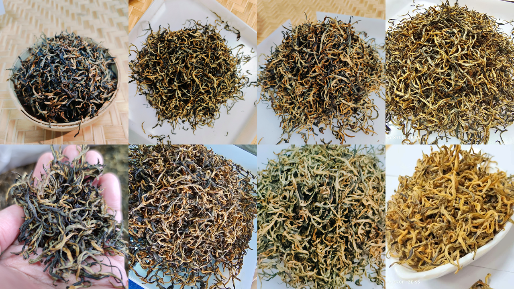
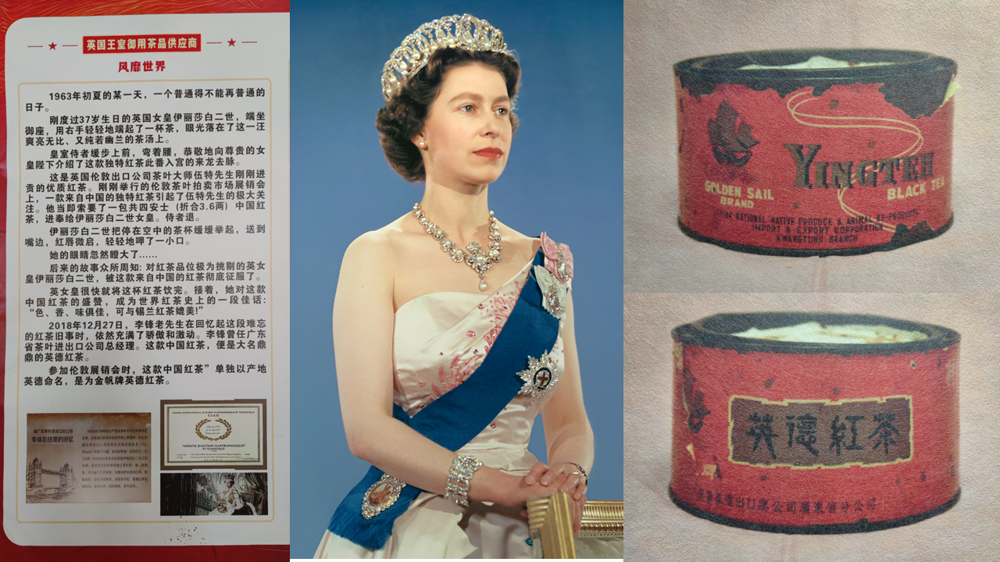
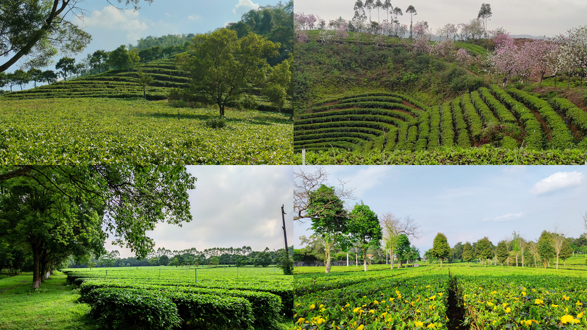
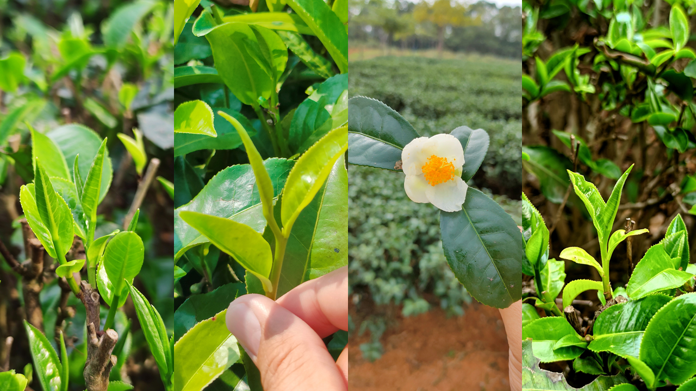
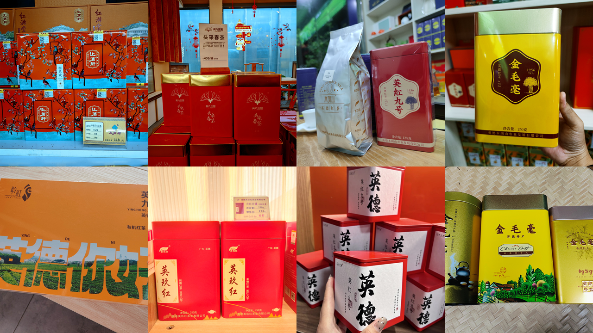
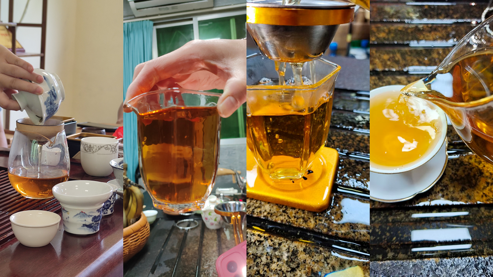
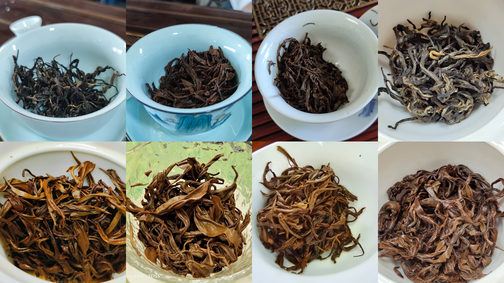

感官特征
依据：清远市地方标准 DB4418/T 0001—2018（地理标志产品 英德红茶）
外形：条索紧结肥壮、乌润油亮、金毫显露；特级金毫茶「金毫满枝、金黄油润」。
香气：鲜浓纯正、花香明显、高锐持久；英红九号具有自然的花果香，高长持久。
汤色：红艳明亮、金圈明显。
滋味：浓、强、鲜、爽；浓厚甜润、醇滑回甘、收敛性强但不苦涩。英红九号耐泡，可达 7–9 泡。
叶底：柔软红亮、匀整。

本地人带路，买茶不踩坑
中国国家地理标志产品 · 世界高香红茶
3 分钟了解为什么英德红茶值得买。
英德红茶是广东省英德市特产，为中国国家地理标志产品。与云南滇红、安徽祁红并称中国三大红茶，被誉为「中国红茶后起之秀」「世界高香红茶」。核心品种「英红九号」由广东省农业科学院茶叶研究所于 1961 年选育，茶汤红艳明亮、金圈明显，香气浓郁纯正、花果香突出。自问世以来，远销西欧、北美、大洋洲、中东等 70 多个国家和地区。

英德茶业历史悠久，可追溯至 1200 多年前的唐朝。现代英德红茶始于 1955 年，1959 年成功试制出英德红茶。
1963 年，英国女王在盛大宴会上用英德红茶招待贵宾。
2023 年 4 月 7 日，中法两国元首在广州松园茶叙，英德红茶·金毛毫作为「国茶」代表用于接待。央视主播康辉品尝后赞美「挺甜的，茶香」。
英德红茶已入选首批中欧地理标志保护清单。

依据：清远市地方标准 DB4418/T 0001—2018（地理标志产品 英德红茶）
外形：条索紧结肥壮、乌润油亮、金毫显露；特级金毫茶「金毫满枝、金黄油润」。
香气：鲜浓纯正、花香明显、高锐持久；英红九号具有自然的花果香，高长持久。
汤色：红艳明亮、金圈明显。
滋味：浓、强、鲜、爽；浓厚甜润、醇滑回甘、收敛性强但不苦涩。英红九号耐泡，可达 7–9 泡。
叶底：柔软红亮、匀整。

原广东省英德茶场（1951 年）所在地，红旗茶厂、农科院茶叶研究所设于此。风味：高香、浓强鲜爽、花果蜜韵突出。
高端茶主产区，紧邻石门台国家级自然保护区，高山云雾、山泉水灌溉。风味：清甜细腻、毫香足、回甘长。
老牌优质产区，喀斯特地貌，海拔 300–600 米，昼夜温差大。风味：香气高扬、滋味醇厚、耐泡。
产量大、品质稳、性价比高，紧邻英红镇，标准化程度高。风味：浓强鲜爽、甜感足、日常口粮首选。
望埠镇、大站镇、浛洸镇、西牛镇：地理标志范围内，品质合格，价格亲民，多做口粮茶与大宗茶。
按清远市地方标准，看懂这张表，没人能忽悠你。


| 等级 | 俗称 | 采摘标准 | 参考价格（元/500g） | 适合场景 |
|---|---|---|---|---|
| 特级一等 金毫茶 | 金毫 | 全芽头，金黄毫毛密布 | 800-1500+ | 高端送礼、收藏 |
| 特级二等 金毛毫 | 金毛毫 | 一芽一叶初展，毫毛多 | 400-800 | 送礼、招待贵客（2023 中法元首茶叙同款） |
| 一级 | 金英红 | 一芽一叶，汤色红亮 | 200-400 | 日常送礼、家庭品饮 |
| 二级 口粮茶 | 英红九号 | 一芽二叶为主，口感醇厚 | 150-200 | 日常饮用、办公室用茶 |
| 三级 | — | 一芽二三叶，滋味浓强 | 80-150 | 奶茶基底、大宗用茶、工业用茶 |
⚠️ 产地参考价格，品牌包装、季节、年份等因素影响实际售价。
英红九号一般 4.5–5 斤鲜叶 → 1 斤干茶。
| 季节 | 采摘时间 | 鲜叶工费（元/斤） | 折合干茶成本（元/斤） |
|---|---|---|---|
| 春茶 | 明前/头采，2–4 月 | 普通 8–15，高端 15–20 | 约 50 元 |
| 夏茶 | 5–7 月 | 3–5 | 约 15 元 |
| 秋茶 | 8–10 月 | 4–8 | 约 20–40 元 |
| 冬茶 | 少量 | 5–10 | 约 25–50 元 |
以上仅为采摘人工成本。各环节人工占红茶总成本 6–7 成，采摘占约 30%。
英德市场茶青收购参考（据茶企老板介绍）：茶青最低收购价 8–10 元/斤，正常价约 15 元/斤。干茶加工成本约 20 元/斤，每斤微利 20–30 元。有机茶成本价 400 多元/斤。
采茶工人收入：普通工 2500–3000 元/月，熟练工 3000–4000 元/月，最高记录 5000+ 元/月。
💡 避坑技巧：线上买茶优先选择发货地是英德本地的电商店铺。

优点：方便比价、售后有保障；缺点：不能先尝后买。
⚠️ 本地人基本不会买。99 元 6 罐的茶品质非常一般，往往是夏茶或陈茶。不是所有叫「英红九号」的都是好茶。
百花市场门口一条街：英德市区最集中的茶叶档口，各种品牌等级都能找到，可试喝比较。没有品牌旗舰店，但档口老板跟茶厂关系熟。优点：能试喝、看实物；缺点：需要会讲价。
大部分生产性茶厂不支持零售散客上门。知名茶厂（积庆里/T3/红旗茶厂）本质上是观光体验，即使到厂里买也不比市场便宜。本地人买茶去熟悉档口，不去生产茶厂。
英德全市茶园 18.65 万亩，年产干茶 1.83 万吨，近 900 家茶企、15.5 万从业人员（每 6 人就 1 个做茶）。
在英德，买到假英红九号的概率不高——英红九号是政府与茶科所全市推广的经济作物，没有母树炒作。容易买到的是品质差的茶，不是假茶。
英红九号不强调核心产区。普通人甚至专家盲测也分不出产区区别，不用为「核心产区」溢价买单。
本地人基本不买品牌茶。找熟识的茶园老板买「日茶」，品质稳定、性价比高，不用担心夏茶充春茶。
拼多多低价杂牌店——以次充好、临期翻新 / 高速服务区/景区门口散装茶 / 路边厂家直销临时摊 / 直播间低价茶
很多本地人提醒：英德百花市场零散商铺混杂，存在贴牌、仿冒假冒英德红茶，选购务必谨慎。
✅ 认准正宗两大硬性标准：
1.茶叶外包装带有英德红茶地理标志专用标识 + 证明商标
2.产品配套溯源体系，可扫码溯源产地、生产厂家、采摘信息
❌ 无地理标志、无证明商标、无溯源码的货品，一律不推荐入手。
选购优先选择品牌茶企直营店、认证门店、品牌官方渠道，最大程度避开假货。
拼多多低价杂牌店——以次充好、临期翻新 / 高速服务区/景区门口散装茶 / 路边厂家直销临时摊 / 直播间低价茶
小白也能用的三步鉴别法。
第一步 | 看外形：条索紧结匀整，色泽乌润，金毫显露。芽头越多、金毫越密，等级越高。松散发暗、碎末多则品质差。
第二步 | 闻香气：干茶应有甜香或花果香，无霉味陈味。冲泡后香气高扬持久。青草味或酸味说明工艺有瑕疵。
第三步 | 品滋味：茶汤醇厚顺滑，回甘明显，不苦不涩。好茶耐泡 6–8 泡。第一泡寡淡或苦涩化不开则质量不佳。
英红九号茶汤应为红艳明亮，有「金圈」——茶汤边缘的金黄色光圈。金圈越明显品质越好。浑浊发暗说明发酵过度或储存不当。


世界高香红茶，泡对了才能喝到好味道。选水：天然泉水或纯净水，软水为宜。自来水含氯影响茶香。
择器：白瓷盖碗有利于呈现红亮汤色。玻璃公道杯观色，白瓷品茗杯品味。

茶量：茶水比 1:30，即 5 克干茶 + 150ml 水。
水温：特级一等（金毫茶）85°C；特级二等（金毛毫）85–90°C；一级及以下 95°C 以上。水温高则香气扬，水温低则鲜味佳。
出汤：前 3 泡 3–5 秒即出汤，之后每泡延长 1–2 秒，最长不超过 9 秒。好茶不用洗茶，第一泡就是精华。
在英德生活多年，汇总茶园老板的真心话。这些事，不会写在包装上。
有机的认证单元可以拆分。老板将茶园划分为「有机区」与「常规区」，分开管理认证。宣传有机茶时，有机区可能只占很小一部分。在广东英德 18 万亩茶园里，真正全园有机的寥寥无几。
每年春茶季前英德往往经历干旱期，但市面上已有「早春茶」在售。早上市的茶芽大多靠人工灌溉催出——水分充足生长快。等雨水的茶园长得慢，但茶叶内含物更足，茶味更浓。催出来的早春茶味道偏淡。

大品牌茶企不全是自家茶园的茶，有时会收购茶农的茶拼配。这也是为什么本地人更愿意直接找茶园老板买——你知道茶来自哪片山头、哪位师傅的手。
不同预算、不同对象，照着选就行。

| 预算 | 适合对象 | 推荐方案 |
|---|---|---|
| 150–200 元 | 日常伴手礼 / 普通朋友 / 自喝 | 英红九号等级，小罐装或礼盒装，品牌选英红/鸿雁入门款 |
| 200–500 元 | 送长辈 / 送同事 / 自喝 | 二轮春茶性价比高，金英红或金毛毫，礼盒大气，附赠品鉴指南更佳 |
| 500–1000 元 | 送领导 / 重要客户 | 花果香更突出，芽头含量更高，金毛毫或金毫，精美礼盒，注意品牌和包装档次 |
| 1000+ 元 | 高端商务 / 收藏级 | 金毫级别，限量版或纪念版礼盒，配收藏证书 |